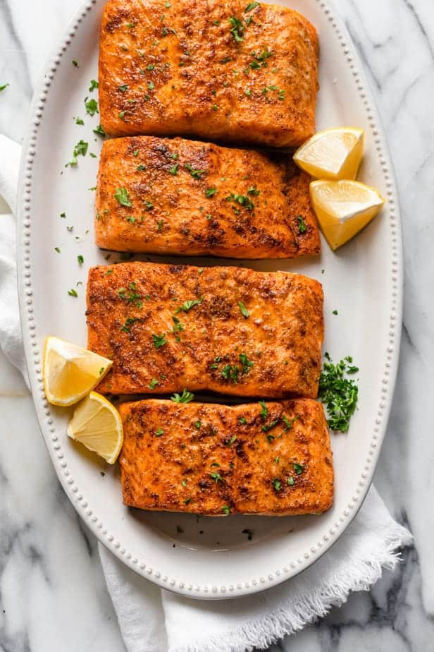

Air-fried salmon

Description
This is a quick and easy way to cook salmon with an air dryer. Prep time takes about 5 minutes, cook time 10 minutes for a total of only 15 minutes!
Ingredients
- Cooking spray
- 2 tablespoons dijon mustard
- 1 tablespoon honey
- 1/2 teaspoon balsamic vinegar
- 1 glove garlic, minced
- 1/2 teaspoon kosher salt
- 1/4 ground black pepper
- 2(6 ounce) frozen salmon
Steps
- Preheat the oven to 390 degrees F (190 degrees C). Spray the air fryer basket with cooking spray.
- Mix Dijon, honey, balsamic vinegar, garlic, salt, and pepper together in a small bowl.
- Place frozen salmon fillets in the prepared air fryer basket. Place in the preheated air fryer and cook for 5 minutes.
- Brush Dijon mixture over the fillets and continue to air-fry until fish flakes easily with a fork, about 5 more minutes.